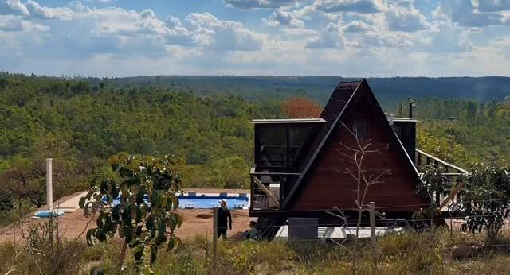
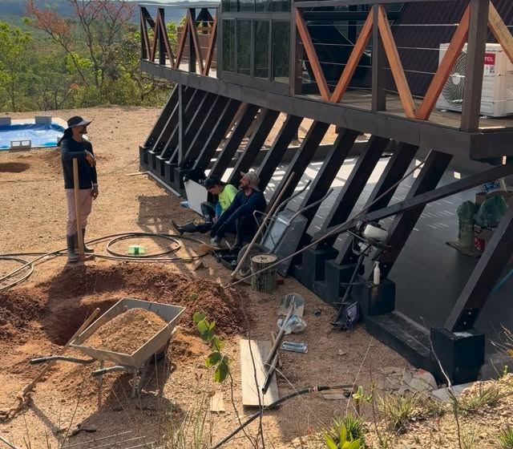
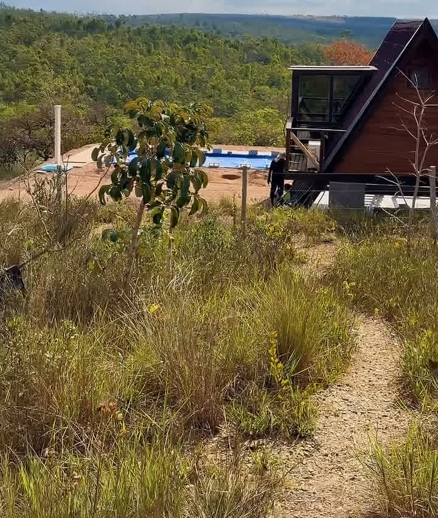
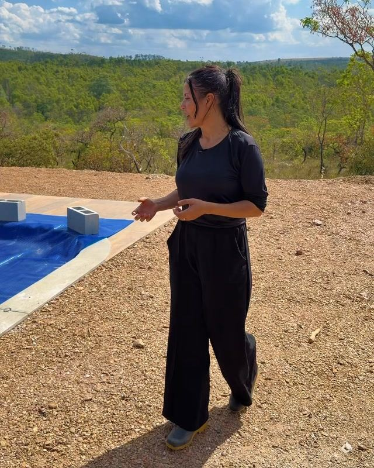
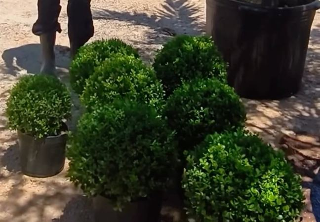
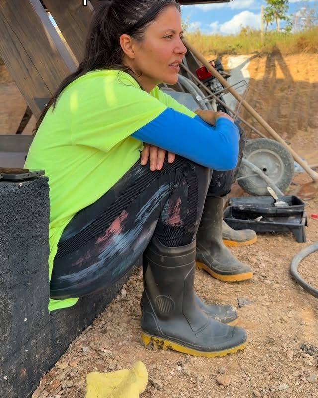
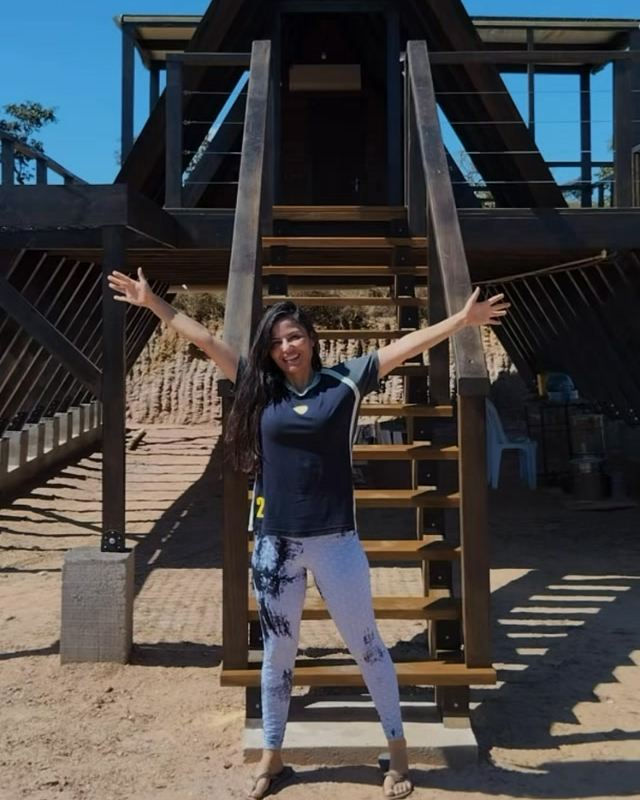

Sendo construída
A cabana e a vista
A estrutura da cabana já está de pé, e agora a obra acontece por fora, no entorno. De lá de cima, o horizonte do cerrado abre inteiro.


1ª Eco Cabana do Cerrado
A primeira eco cabana do cerrado, com wellness, natureza e reconexão a 1 hora de Brasília. A obra está acontecendo agora, e quem acompanha entra primeiro.
"Onde o silêncio acolhe, a natureza inspira e o tempo parece passar mais devagar."
do primeiro post da cabana, 09/09/2026
Um lugar pensado pro bem-estar, pra chegar e cuidar de si no seu tempo.
Cerrado em volta, céu aberto e uma vista que a gente só consegue descrever como surreal.
Desconexão da rotina e conexão com a natureza. Foi com esse propósito que a cabana começou.
Quem sabe esse não seja o seu próximo refúgio?
Entrar na lista de esperaEm obra
Aqui só entra o que já dá pra mostrar. O resto a gente conta quando estiver confirmado.

A estrutura da cabana já está de pé, e agora a obra acontece por fora, no entorno. De lá de cima, o horizonte do cerrado abre inteiro.


7 x 3,5m
"Estamos aos poucos construindo a nossa estrutura para uma ótima experiência."
O terreno é bem ácido e tem pouco nutriente. Por isso a gente está estudando o solo antes de plantar, pra preparar a terra e escolher espécies que se adaptem bem ao lugar.
As primeiras plantas já chegaram, e um dos lugares já tem destino: ali vai ser um pé de jaboticaba.


Quer ver isso pronto antes de todo mundo?
Entrar na lista de esperaA série que está rodando no Instagram: "tentando viralizar o empreendimento da minha tia".

"Não é fácil, mas é muito bom fazer parte dessa realização."
A cabana é o empreendimento da tia. Eles vieram do Sul pra perto de Brasília pra apostar numa ideia de eco cabana focada no bem-estar.
A sobrinha pegou o celular e começou a contar a obra no Instagram, um dia de cada vez. Muita gente começou a acompanhar, e é por isso que esta página existe.
Acompanhar de perto"Quando estiver concluído vou alugar"
164comentários no vídeo do Dia 01 (contagem de 14/09/2026)
A lista de espera é avisada primeiro.
Onde
A 1 hora de Brasília.
É ali, no cerrado goiano, que a cabana está sendo construída.
Mapa ilustrativo, fora de escala.